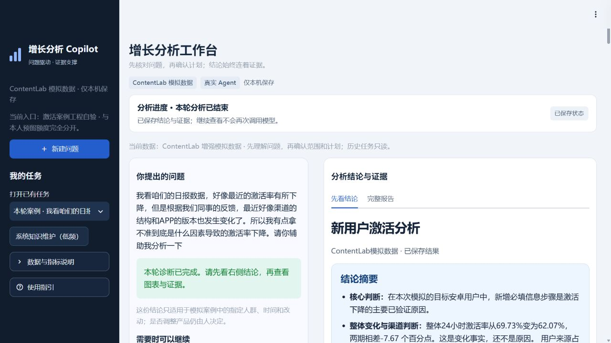
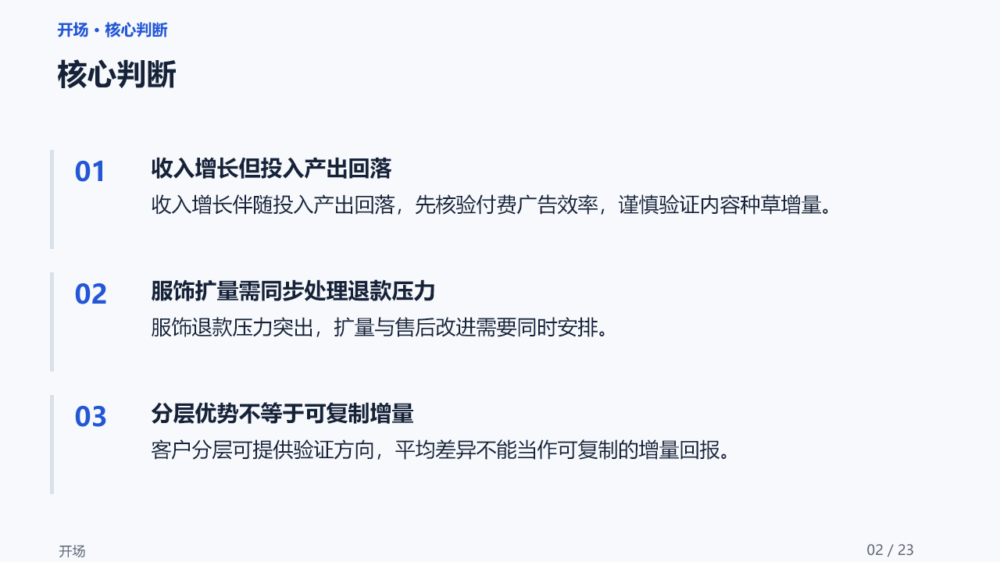

企业增长分析
Copilot-Agent
企业业务场景 · 受控分析 Agent 原型
场景与设计 面向运营分析与决策，主导需求拆解、指标口径、交互流程及验收规则，将问题澄清、范围确认、分析计划、受控 SQL 查询和证据报告串联为本地工作台。
案例与验证
以模拟 AI 内容产品的激活下降为案例，按分析结果推进渠道、设备版本、生成漏斗等核验；一次完整验证串联 5类工具、19条受控查询，生成图表及可追溯的离线 HTML 报告。

北京 · 7年+互联网运营经历
美团 / 好未来 / 京东
目标岗位 · WorkBuddy
把 AI 能力，接到真实业务场景里。
覆盖企业业务、个人学习与知识管理场景。主导业务与产品设计，AI 辅助实现。
企业业务场景 · 受控分析 Agent 原型
场景与设计 面向运营分析与决策，主导需求拆解、指标口径、交互流程及验收规则，将问题澄清、范围确认、分析计划、受控 SQL 查询和证据报告串联为本地工作台。
以模拟 AI 内容产品的激活下降为案例，按分析结果推进渠道、设备版本、生成漏斗等核验；一次完整验证串联 5类工具、19条受控查询，生成图表及可追溯的离线 HTML 报告。

企业业务场景 · 已发布工作流
能力产品化 将运营周报、月报和经营复盘方法转为可复用 Skill，覆盖单表 Excel／CSV 输入、口径确认、证据核查、HTML 分析简报和可编辑 PPT；把数字追溯、图表匹配与跨格式一致性纳入验收。
完成 GitHub、腾讯 SkillHub、魔搭渠道发布及平台适配；核查平台搜索展示、下载记录与安装路径，持续完善中文说明、FAQ、案例及跟做教程；平台累计 1500+下载、平台 AI 评测评级优秀(4.6/5)

个人学习场景 · AI 阅读工具
作品说明 串联 HTML 阅读界面、桥接服务与模型 API，将书名输入转为结构化阅读内容，支持书架、笔记与问答。
使用实践 围绕个人阅读实际使用，沉淀可重复查阅的阅读资料，结合书架分类、星标和阅读进度完善体验。
个人知识管理场景 · 持续使用
作品说明 针对多来源资料分散、跨 AI 协作上下文丢失等问题，主导信息分层、证据追溯、人工审批及交接规则设计，借助 Claude Code／Codex 持续迭代个人知识工作流。
业务应用 已用于个人知识蒸馏、求职证据管理和项目协作；可用于伙伴资料、合作案例及试点复盘的沉淀，支持共享任务背景、追溯决策依据与接续执行状态。
企业业务场景 · 关键词规则原型
作品说明 设计批量反馈导入与优先级识别流程，基于关键词规则按产品故障、功能建议、用户投诉等六类归档，生成分类分布、情感倾向和高优先级反馈视图。
业务应用 可用于用户与伙伴反馈复盘，梳理接入、使用中的高频问题和待核查事项，为 FAQ 完善、体验优化及需求优先级讨论提供输入。
自然语言查询交互与竞品信息整理。
两版研究方案：从用户需求出发，拆解伙伴专业供给、平台支持、合作收益与试点路径。
主方案 · 成年初中级运营人员
联合有运营教研能力的机构，把活动复盘方法变成可练习、可反馈的技能或专家。用户先写判断，再获取提示、修改复盘，最后用新案例独立作答。
探索方案 · 小学三至四年级家庭
联合科学教育机构提供完整探究专题。家长操作工具，孩子线下预测、实践、记录和解释，AI 辅助准备与复盘，不代写孩子的结论。
两版均为求职研究方案，包含伙伴准入与分层、收益与分流评估、试点停止条件和复制路径；尚未开展机构合作或用户试点，不代表 WorkBuddy 官方方案或资源承诺。
品类运营
站内&站外新用户：通过平台新人券、首单新人价等策略使非食 POP 品类站外新用户贡献占比达到 60%；设计品类首购礼金等站内新客策略，每月贡献 20% 站内新用户
增长产品运营
企微用户拉新：经历团队从0至800万流量池搭建，重点为团队探索出了“企微个人号裂变”，以及“站内百万日活导流企微”的模式，累计带来160万+用户，占比20%
用户分层提转化：联动数据和算法团队针对历史购课用户行为数据分析，成功搭建高意向用户模型数据，通过用户分层运营，撬动25%的流量带来85%的转化效果
APP裂变拉新：创新性结合APP拉新目标与微信生态裂变玩法，实现拍照批改APP用户新增10万+，净增粉丝12 万+，累计促活APP用户近20万
运营合伙人
用户拉新：参与 K12 在线教育荐课平台从 0 搭建，负责内容矩阵、用户拉新；单次活动 1 天涨粉 2 万，创业阶段累计沉淀 20 万粉丝和 300+ 社群
To B 市场运营
B端线索获取：面向企业市场负责人运营公司自媒体，协助组织线下沙龙与排行榜大会，获取大客户线索并衔接销售；所在市场部提前1个月完成全年1400条线索目标。
销售协同：按区域分配线索、跟进分公司销售反馈，每周向CEO汇报客户意向与签约进展。
985 院校 · 市场营销 · 本科
2013.09 — 2017.07
马积川 · 北京
目标岗位：WorkBuddy 行业生态合作运营